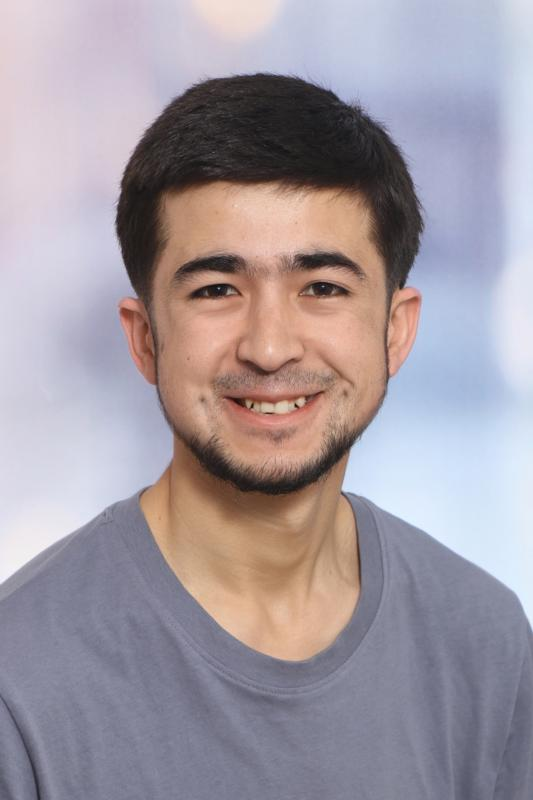
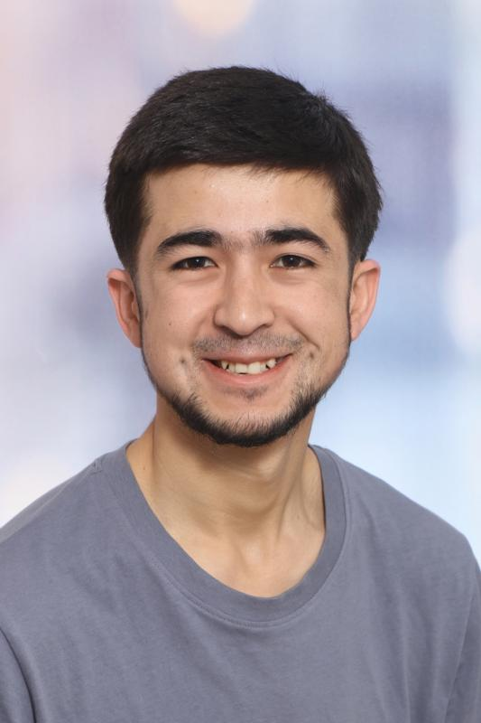

Hallo , ich bin Abdutolib Juraqulov


 

Ich bewerbe mich um einen Ausbildungsplatz zum Fachinformatiker für Anwendungsentwicklung, da ich großes Interesse an IT und Softwareentwicklung habe und meine berufliche Zukunft in diesem Bereich sehe.
Derzeit befinde ich mich im dritten Lehrjahr der Ausbildung zum Medientechnologen Druckverarbeitung. Parallel dazu habe ich mich in den letzten zwei Jahren intensiv mit Programmierung beschäftigt. Zu Beginn habe ich mir grundlegende Kenntnisse selbstständig angeeignet und anschließend meine Fähigkeiten weiter ausgebaut. Besonders sicher bin ich im Umgang mit HTML, CSS, JavaScript und Python.
Die Arbeit mit dem Computer und das Lösen technischer Probleme sind für mich nicht nur Lerninhalte, sondern auch ein persönliches Hobby. Eigene kleine Projekte sowie diese Webseite habe ich selbst umgesetzt und auf GitHub veröffentlicht, um meine praktischen Kenntnisse zu zeigen und kontinuierlich zu verbessern.
Ich arbeite strukturiert, bin motiviert und lerne neue Inhalte schnell. In der Ausbildung zum Fachinformatiker für Anwendungsentwicklung möchte ich mein vorhandenes Wissen vertiefen, professionelle Entwicklungsprozesse kennenlernen und mich langfristig als Softwareentwickler weiterentwickeln.
Über eine Einladung zu einem persönlichen Gespräch freue ich mich sehr.